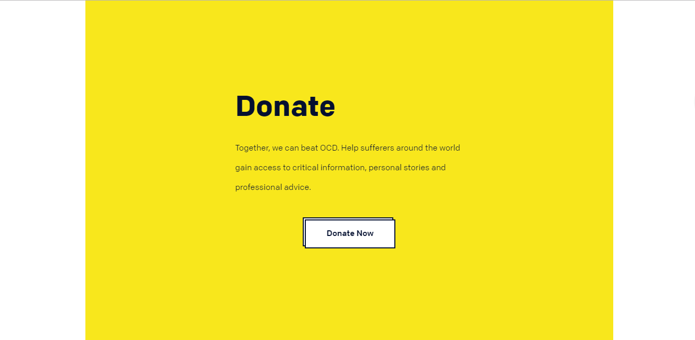

强迫症（OCD）属于焦虑障碍的一种类型，是一组以强迫思维和强迫行为为主要临床表现的神经精神疾病，其特点为有意识的强迫和反强迫并存，一些毫无意义、甚至违背自己意愿的想法或冲动反反复复侵入患者的日常生活。患者虽体验到这些想法或冲动是来源于自身，极力抵抗，但始终无法控制，二者强烈的冲突使其感到巨大的焦虑和痛苦，影响学习工作、人际交往甚至生活起居。
近年来统计数据提示强迫症的发病率正在不断攀升，有研究显示普通人群中强迫症的终身患病率为1%～2%，约2/3的患者在25岁前发病。强迫症因其起病早、病程迁延等特点，常对患者社会功能和生活质量造成极大影响，世界卫生组织（WHO）所做的全球疾病调查中发现，强迫症已成为15～44岁中青年人群中造成疾病负担最重的20种疾病之一。另外患者常出于种种考虑在起病之初未及时就医，一些怕脏、反复洗手的患者可能要在症状严重到无法正常生活后才来就诊，起病与初次就诊间可能相隔十年之久，无形中增加了治疗的难度，因此我们应当提高对强迫症的重视，早发现早治疗。
